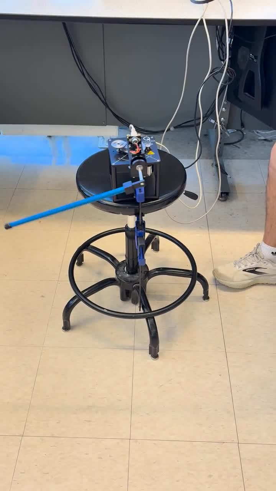
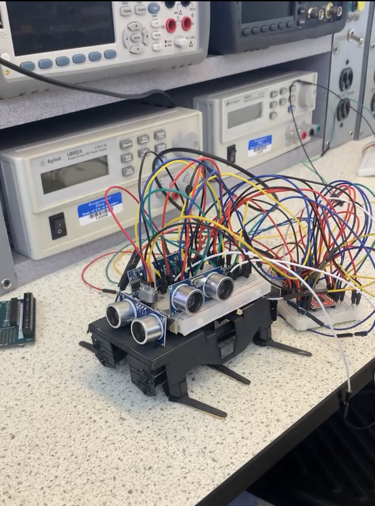
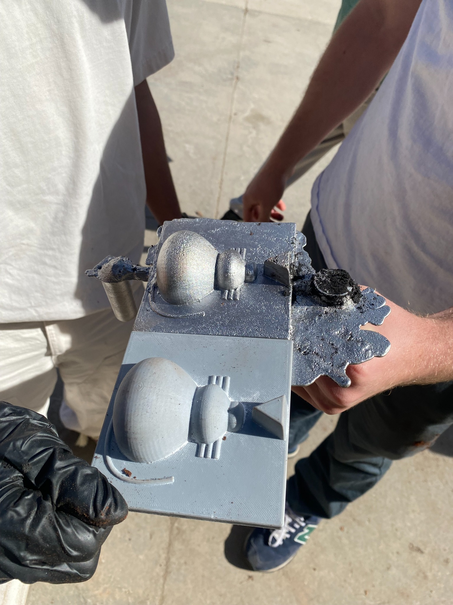

01 / Embedded motion
Drawing robot
A small robot that translates a drawing from a computer interface into physical motion on the ground. The project connected a digital command path to motor-driven movement and a marker.
A few compact projects that show how I move from equations and interfaces to physical behavior.
Each one is a smaller window into controls, embedded systems, sensing, fabrication, or mechanical design.
A small robot that translates a drawing from a computer interface into physical motion on the ground. The project connected a digital command path to motor-driven movement and a marker.

Designed a controller from the system’s kinematic equations and tested the response on a physical balancing-pendulum setup.

A six-legged robot using multiple ultrasonic sensors to detect interference and adapt its operating behavior.

Designed a mouse-and-cheese model in CAD, then carried the geometry into a physical casting and finished part.
See the LANL panel positioner and the vision-guided mechatronics robot for the detailed design, controls, and integration work.
Panel positioner ↗ · Mechatronics robot ↗